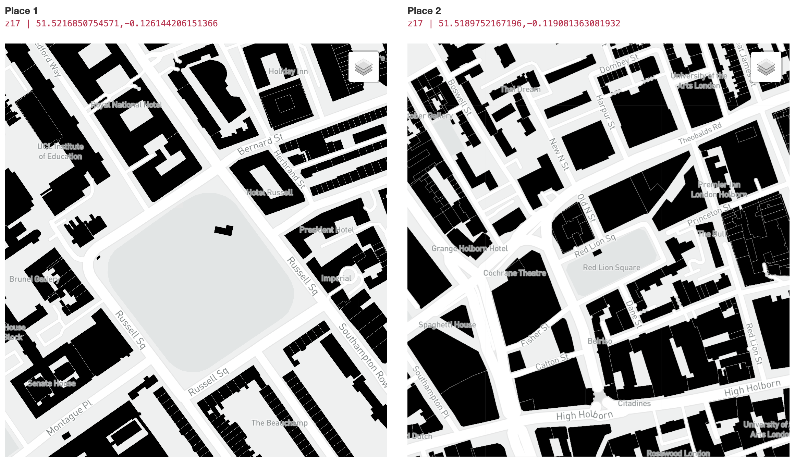
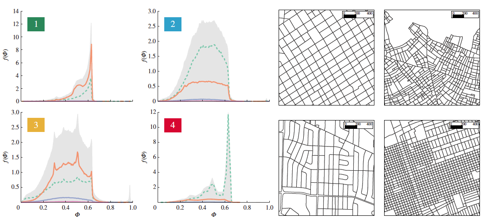

Comparing size and form for understanding urban space
Comparing things is a natural first step for categorising. And categorising by size and shape enhances the understanding of the spatial environments we live in while enabling its exploration. As such, identifying, naming and classifying is a fundamental tool in science1. In urban planning and design practice is quite common to refer to the dimension of and shape of urban landmarks and patterns to obtain orientation. In the speculative redevelopment of a 50-acre-site the researchers compare the proposed ‘urban rooms’ with open spaces in the Bloomsbury area of London 2.
Moreover, the large availability of urban data has encourage quantitative research for the classification of cities3.

Cities are complex entities which understanding is facilitated by urban structure representations at multiple scales. With the purpose of visually exploring places in any location across the world, the size & form webapp allows the comparison side-by-side at multiple levels of detail and layers of information. How does the Barcelona block compares to the Manhattan block?, Is Hyde Park bigger than Central Park, London than New York?, How big is … in relation to …?
The interactive maps
The webapp is built using shiny, and leaflet with a simple and minimalist structure in ~100 lines of code. The user is presented with a default view comparing the satellite views of Central London with Central Santiago at a zoom level of 14 (1:35000 ~ scale on screen4). To compare between any place worldwide the lat,lng pair of coordinates in EPSG:4326 decimal degrees notation should be entered in the search box. The pair of coordinates for a place can be easily obtained from Google Maps. Then the level of zoom has to be set (e.g. 19 for an ~ scale of 1:1000). To enhance the visual exploration the interactive maps have typical funcionalities of zoom (synchronised) and pan. Furthermore, a range of spatial layers can be selected for comparisons at different scales and themes.
Data layers
The layers described in the table and visualised below can support the complex and multidimensional nature of planning and design tasks than consider the examination of size, grain, urban fabric, urban functions, street pattern, urban footprint and population density.
Attaching package: 'dplyr'The following objects are masked from 'package:stats':
filter, lagThe following objects are masked from 'package:base':
intersect, setdiff, setequal, unionWarning: package 'kableExtra' was built under R version 4.1.1
Attaching package: 'kableExtra'The following object is masked from 'package:dplyr':
group_rows| Place 1 | Place 2 | Data layer | Description |
|---|---|---|---|
| 51.5137,-0.0981 | 51.5137,-0.0981 | satellite | Manhattan vs Barcelona block |
Footnotes
See Wellcome Collection’s Animal. Vegetable. Mineral↩︎
Speculations in Urban Space and Structures, Martin, L., Martin, L. A., & March, L. (Eds.). (1972). Cambridge University Press.↩︎
Citation
BibTeX citation:
@online{palominos2022,
author = {Nicolas Palominos},
title = {Size \& {Form}},
date = {2022-05},
langid = {en}
}
For attribution, please cite this work as:
Nicolas Palominos. 2022. “Size & Form.” May 2022.